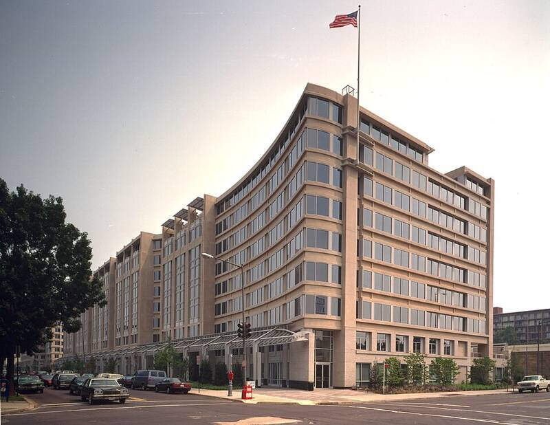

NASA headquarters
Washington, DC

Sponsored the 2022 to 2023 UAP independent study team. 1
Open in the interactive Watcher
Related
- David Spergel Person
Sources
- Unidentified Anomalous Phenomena (UAP) NASA Science
Washington, DC

Sponsored the 2022 to 2023 UAP independent study team. 1
Open in the interactive Watcher